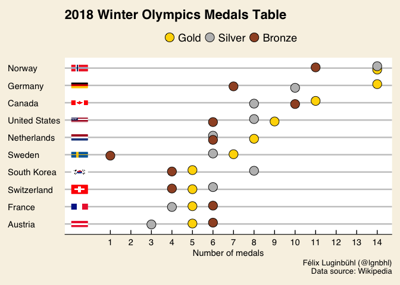
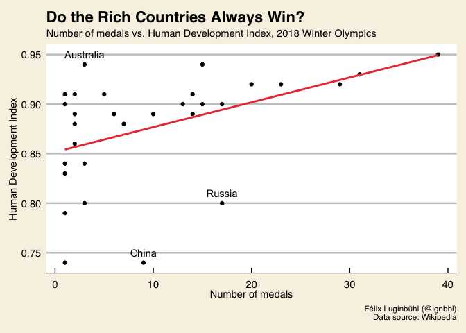
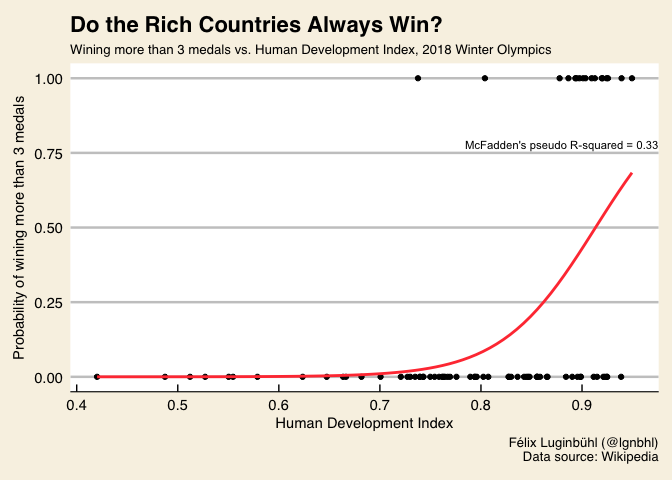

Like most of us, I watched the Olympics Winter Games. But after seeing the medal table, I had the impression that the richer a country was, the more medals he got. But was it really the case? And if yes, to what extent?
Before exploring these questions with R, we firstly need to choose a metric to classify the participating nations from the richer to the poorer. As Norway, Germany and Canada are the most medaled countries of the 2018 Winter Olympics, the Human Development Index (HDI) is clearly a better choice than the GDP.
In this article, we will answer two questions:
We will therefore show how to use simple models for exploratory data analysis.
The Human Development Index is an indicator developed by the United Nations Development Programme since 1990. It goes further than the GDP per capita by combining it with life expectancy and education.
We can get the data from selected years directly from the UNDP website. The indicator exists only for the years 1990, 2000, 2010 and then each year until 2015. Let’s select the closest years from each Winter Olympic Games.
If you are not interested in the scraping part, just skip this chapter.
library(tidyverse)
library(magrittr)
library(rvest)
library(readxl)
url_hdi <- "http://hdr.undp.org/sites/default/files/composite_tables/2016_Statistical_Annex_Table_2.xls"
download.file(url = url_hdi, destfile = "hdi_all.xls")
hdi <- read_excel(path = "hdi_all.xls", skip = 4)
hdi_tidy <- hdi %>%
select(Country = 2, "1990", "2000", "2010", "2014", "2015") %>%
na.omit() %>% # remove only subtitles of the Excel file
gather("HDI_Year", "HDI", 2:6) %>%
mutate(HDI = as.numeric(HDI), # ".." of rows converted as NA
HDI_Year = as.numeric(HDI_Year),
Country = recode(Country,
"Russian Federation" = "Russia",
"Korea (Republic of)" = "South Korea",
"United Kingdom" = "Great Britain"))
print(hdi_tidy)## # A tibble: 1,050 x 3
## Country HDI_Year HDI
## <chr> <dbl> <dbl>
## 1 Norway 1990 0.849169
## 2 Australia 1990 0.865822
## 3 Switzerland 1990 0.830665
## 4 Germany 1990 0.801083
## 5 Denmark 1990 0.798528
## 6 Singapore 1990 0.718370
## 7 Netherlands 1990 0.829777
## 8 Ireland 1990 0.762468
## 9 Iceland 1990 0.796504
## 10 Canada 1990 0.848961
## # ... with 1,040 more rowsNow, we will scrape the number of medals by country since the Winter Olympics of 1992 from Wikipedia.
getMedals <- function(i) {
url <- paste0("https://en.wikipedia.org/wiki/", i, "_Winter_Olympics_medal_table")
medals <- url %>%
read_html() %>%
html_node(".wikitable") %>%
html_table(fill = TRUE)
colnames(medals)[2] <- "Country"
colnames(medals)[6] <- "nMedals"
medals$Country <- medals$Country %>%
gsub(".{6}$", "", .) # https://stackoverflow.com/questions/23413331
medals$Country <- stringr::str_trim(medals$Country) # remove space from host country
medals$WO_Year <- i
medals <- medals[-nrow(medals),] # remove last row
return(medals)
}
wo_years <- c(1992, 1994, 1998, 2002, 2006, 2010, 2014, 2018)
medals <- map_dfr(wo_years, getMedals) %>%
as_tibble() %>%
mutate(Country = recode(Country,
"Olympic Athletes from Russia" = "Russia"))
print(medals)## # A tibble: 198 x 7
## Rank Country Gold Silver Bronze nMedals WO_Year
## <chr> <chr> <int> <int> <int> <int> <dbl>
## 1 1 Germany 10 10 6 26 1992
## 2 2 Unified Team 9 6 8 23 1992
## 3 3 Norway 9 6 5 20 1992
## 4 4 Austria 6 7 8 21 1992
## 5 5 United States 5 4 2 11 1992
## 6 6 Italy 4 6 4 14 1992
## 7 7 France 3 5 1 9 1992
## 8 8 Finland 3 1 3 7 1992
## 9 9 Canada 2 3 2 7 1992
## 10 10 South Korea 2 1 1 4 1992
## # ... with 188 more rowsLastly, we will join our two datasets.
dataset <- medals %>%
full_join(hdi_tidy, by = "Country") %>%
drop_na(nMedals) # remove country with no medals
print(dataset)## # A tibble: 978 x 9
## Rank Country Gold Silver Bronze nMedals WO_Year HDI_Year
## <chr> <chr> <int> <int> <int> <int> <dbl> <dbl>
## 1 1 Germany 10 10 6 26 1992 1990
## 2 1 Germany 10 10 6 26 1992 2000
## 3 1 Germany 10 10 6 26 1992 2010
## 4 1 Germany 10 10 6 26 1992 2014
## 5 1 Germany 10 10 6 26 1992 2015
## 6 2 Unified Team 9 6 8 23 1992 NA
## 7 3 Norway 9 6 5 20 1992 1990
## 8 3 Norway 9 6 5 20 1992 2000
## 9 3 Norway 9 6 5 20 1992 2010
## 10 3 Norway 9 6 5 20 1992 2014
## # ... with 968 more rows, and 1 more variables: HDI <dbl>We got a missing value from the Unified Team because no HDI is related to it. Which other countries have missing values in our dataset?
## [1] "Unified Team" "Czechoslovakia" "North Korea" "Uzbekistan"
## [5] "Belarus" "Belarus" "Belarus" "Belarus"
## [9] "Belarus" "Belarus" "Belarus" "Liechtenstein"Only 13 rows have missing values! Surprisingly the United Nations don’t have a HDI for Liechtenstein in 1990.
Before working on the regression models, let’s just have a look at the medal table of 2018, by number medal for the top 10 countries.
data_medals <- dataset %>%
filter(WO_Year == 2018,
HDI_Year == 2015) %>%
filter(Rank == c(1:10)) %>%
select(Rank, Country, Gold, Silver, Bronze) %>%
reshape2::melt(id.vars = c("Rank", "Country")) %>%
set_colnames(c("Rank", "Country", "Medal", "Number")) %>%
mutate(Rank = as.numeric(Rank)) %>%
filter(!(Number == 0))
library(countrycode)
library(ggimage)
set.seed(20)
data_medals %>%
mutate(iso2 = countrycode(data_medals$Country, "country.name", "iso2c")) %>%
ggplot(aes(x = fct_reorder(Country, Rank, .desc = T), y = Number)) +
geom_jitter(aes(fill = Medal), pch = 21, size = 5, width = 0.15, height = 0) +
ggimage::geom_flag(y = -0.5, aes(image = iso2)) +
scale_fill_manual(values = c("gold", "grey", "sienna"), name = NULL) +
scale_y_continuous(breaks = c(1:14)) +
coord_flip() +
expand_limits(y = -0.5) +
ggthemes::theme_economist_white() +
theme(plot.background = element_rect(fill = "#f8f2e4"),
legend.background = element_blank(),
legend.key = element_blank()) +
labs(x = NULL, y = "Number of medals",
title = "2018 Winter Olympics Medals Table",
caption = "Félix Luginbühl (@lgnbhl)\nData source: Wikipedia")
Let’s begin by visualizing the relationship between the variables nMedals and HDI for the 2018 Winter Olympics Games.
library(ggthemes)
dataset %>%
filter(WO_Year == 2018, HDI_Year == 2015) %>%
mutate(HDI = round(HDI, 2)) %>%
ggplot(aes(nMedals, HDI, label = Country)) +
geom_point() +
geom_text(data = . %>% filter(WO_Year == 2018,
HDI_Year == 2015,
Country %in% c("China", "Russia", "Australia")),
aes(label = Country), nudge_y = 0.01) +
geom_smooth(method = lm, se = F, color = "brown2") +
theme_economist_white() +
theme(plot.background = element_rect(fill = "#f8f2e4")) +
labs(x = "Number of medals", y = "Human Development Index",
title = "Do the Rich Countries Always Win?",
subtitle = "Number of medals vs. Human Development Index, 2018 Winter Olympics",
caption = "Félix Luginbühl (@lgnbhl)\nData source: Wikipedia")
We can observe that the number of medals of China and Russia are not well explained by a linear regression.
In order to complete all the assumptions required to run a linear regression, we need to make a logarithmic transformation of the number of medals variable.
library(gvlma)
wo_2018 <- dataset %>%
filter(WO_Year == 2018, HDI_Year == 2015) %>%
mutate(nMedals_log = log(nMedals))
mod_2018 <- lm(nMedals_log ~ HDI, data = wo_2018)
gvmodel <- gvlma(mod_2018)
summary(gvmodel)##
## Call:
## lm(formula = nMedals_log ~ HDI, data = wo_2018)
##
## Residuals:
## Min 1Q Median 3Q Max
## -2.0422 -1.0393 0.2034 0.8227 1.8388
##
## Coefficients:
## Estimate Std. Error t value Pr(>|t|)
## (Intercept) -6.787 3.273 -2.073 0.0475 *
## HDI 9.686 3.722 2.602 0.0146 *
## ---
## Signif. codes: 0 '***' 0.001 '**' 0.01 '*' 0.05 '.' 0.1 ' ' 1
##
## Residual standard error: 1.12 on 28 degrees of freedom
## Multiple R-squared: 0.1947, Adjusted R-squared: 0.166
## F-statistic: 6.771 on 1 and 28 DF, p-value: 0.01464
##
##
## ASSESSMENT OF THE LINEAR MODEL ASSUMPTIONS
## USING THE GLOBAL TEST ON 4 DEGREES-OF-FREEDOM:
## Level of Significance = 0.05
##
## Call:
## gvlma(x = mod_2018)
##
## Value p-value Decision
## Global Stat 6.3992 0.17125 Assumptions acceptable.
## Skewness 0.1197 0.72934 Assumptions acceptable.
## Kurtosis 1.4743 0.22466 Assumptions acceptable.
## Link Function 3.6303 0.05674 Assumptions acceptable.
## Heteroscedasticity 1.1748 0.27841 Assumptions acceptable.Our model has a coefficient of determination (or R-squared) of 0.19, with a p-value of 0.01. The R-squared means that around 20% of the variation of the nMedals can be explained by the variation of the HDI. It is quite low but not that bad given the fact that we are using only one predictor.
We only visualized the year 2018. What is the relationship between our two variables for each Winter Olympics year since 1992?
library(broom)
wo_years <- c(1992, 1994, 1998, 2002, 2006, 2010, 2014, 2018)
hdi_years <- c(1990, 1990, 2000, 2000, 2010, 2010, 2014, 2015)
getModels <- function(i, j) {
olympic <- dataset %>%
filter(WO_Year == i, HDI_Year == j) %>%
mutate(nMedals_log = log(nMedals))
model <- lm(nMedals_log ~ HDI, data = olympic)
model_metrics <- glance(model)
model_metrics$WO_Year <- i
model_metrics <- model_metrics %>%
select(WO_Year, r.squared, adj.r.squared, p.value)
return(model_metrics)
}
map2_dfr(wo_years, hdi_years, getModels)## # A tibble: 8 x 4
## WO_Year r.squared adj.r.squared p.value
## <dbl> <dbl> <dbl> <dbl>
## 1 1992 0.0585 -0.00425 0.350
## 2 1994 0.0554 0.00295 0.318
## 3 1998 0.0530 0.00991 0.279
## 4 2002 0.0908 0.0495 0.152
## 5 2006 0.148 0.112 0.0527
## 6 2010 0.122 0.0853 0.0804
## 7 2014 0.238 0.206 0.0115
## 8 2018 0.195 0.166 0.0146This is a surprise!
Linear regressions show that the Human Development Index is increasingly significant to explain the number of medals won by each country during the Winter Olympics Games since 1992. However, we can observe that the HDI is only statistically significant to explain the number of medals in 2014 and 2018 (p-value < 0.05).
Do all our models complete the assumptions of a linear regression?
getAssumptions <- function(i, j) {
olympic <- dataset %>%
filter(WO_Year == i, HDI_Year == j) %>%
mutate(nMedals_log = log(nMedals))
model <- lm(nMedals_log ~ HDI, data = olympic)
gvmodel <- gvlma(model)
gvmodel <- summary(gvmodel)
return(gvmodel)
}
model_assumptions <- map2_df(wo_years, hdi_years, getAssumptions)
model_assumptions %>%
count(Decision)## # A tibble: 1 x 2
## Decision n
## <chr> <int>
## 1 Assumptions acceptable. 40All our models have acceptable assumptions for running linear regressions.
However, maybe countries having won less than 3 medals have often a HDI lower than 0.86? It is therefore time to try a binary logistic regression.
Our previous model didn’t take into account the countries which haven’t won any medals. This is a bias we need to study now.
Let’s scrape all the countries which participated to the Winter Olympics since 1992.
url_wiki2 <- "https://en.wikipedia.org/w/index.php?title=List_of_participating_nations_at_the_Winter_Olympic_Games&oldid=827837541"
noc_all <- url_wiki2 %>%
read_html() %>%
html_node(".wikitable") %>%
html_table(fill = TRUE)
noc_all2 <- noc_all %>%
select(Country = A, "92", "94", "98", "02", "06", "10", "14", "18") %>%
gather("WO_Year", "Value", 2:9) %>%
mutate(Value = recode(Value,
"•" = "1",
"EUN" = "1", # Unified Team of 1992
"H" = "1", # Host country
"OAR" = "1")) # Olympic Athletes from Russia
noc_all2$Value[noc_all2$Value == ""] <- 0
noc_all2$Value <- as.numeric(noc_all2$Value) # Make NA Value which aren't 0 or 1
row_az <- which(nchar(noc_all2$Country) == 1) # get alphabetical order row
noc_all2$Country[row_az] <- NA # make alphabetical order row NA
noc_all2 <- drop_na(noc_all2, Country) # remove alphabetical order row
# Additional cleaning
noc_all2$Country <- noc_all2$Country %>%
gsub("\\[|\\^]|\\›]", "", .) %>%
stringr::str_trim()
noc_part <- noc_all2 %>% filter(Value == 1)
noc_part %>% filter(WO_Year == 18)## # A tibble: 94 x 3
## Country WO_Year Value
## <chr> <chr> <dbl>
## 1 Albania 18 1
## 2 Andorra 18 1
## 3 Argentina 18 1
## 4 Armenia 18 1
## 5 Australia 18 1
## 6 Austria 18 1
## 7 Azerbaijan 18 1
## 8 Belarus 18 1
## 9 Belgium 18 1
## 10 Bermuda 18 1
## # ... with 84 more rowsFor which countries can we find missing values?
## [1] "Bosnia and Herzegovina" "Czech Republic"
## [3] "Kosovo" "Montenegro"
## [5] "Serbia" "Serbia and MontenegroSCG"
## [7] "Slovakia" "Kosovo"
## [9] "Montenegro" "Serbia"
## [11] "Kosovo" "Montenegro"
## [13] "Serbia" "Costa Rica"
## [15] "Kosovo" "Montenegro"
## [17] "Serbia" "Kosovo"
## [19] "Montenegro" "Serbia"
## [21] "Virgin Islands" "Kosovo"
## [23] "India" "Kosovo"Makes sense!
We will now build a logistic regression. In other words, we will model the probability that a country has won more than 3 medals during the 2018 Winter Olympics Games according to its HDI.
noc_hdi_2018 <- noc_part %>%
full_join(hdi_tidy, by = "Country") %>%
filter(Value == 1) %>%
filter(WO_Year == 18) %>%
filter(HDI_Year %in% c(2015, NA))
# Which countries don't have a HDI ?
noc_hdi_2018 %>% filter(HDI_Year %in% NA)## # A tibble: 13 x 5
## Country WO_Year Value HDI_Year HDI
## <chr> <chr> <dbl> <dbl> <dbl>
## 1 Bermuda 18 1 NA NA
## 2 Bolivia 18 1 NA NA
## 3 Chinese TaipeiTPE 18 1 NA NA
## 4 Hong Kong 18 1 NA NA
## 5 Iran 18 1 NA NA
## 6 Korea 18 1 NA NA
## 7 North Korea 18 1 NA NA
## 8 Kosovo 18 1 NA NA
## 9 Macedonia 18 1 NA NA
## 10 Moldova 18 1 NA NA
## 11 Puerto Rico 18 1 NA NA
## 12 Olympic Athletes from Russia 18 1 NA NA
## 13 East Timor 18 1 NA NAwo_2018$Binary <- wo_2018$nMedals > 3 # more than 3 medals
dataset2 <- noc_hdi_2018 %>%
full_join(wo_2018, by = c("Country", "HDI")) %>%
select(Country, HDI, nMedals, Binary)
# Missing value means no medals
dataset2$nMedals[is.na(dataset2$nMedals)] <- 0
dataset2$Binary[is.na(dataset2$Binary)] <- FALSE
dataset2$Binary <- dataset2$Binary*1 # from logical to numeric
model_2 <- glm(Binary ~ HDI, data = dataset2, family = "binomial")
glance(model_2)## null.deviance df.null logLik AIC BIC deviance df.residual
## 1 82.27884 78 -29.70839 63.41678 68.15568 59.41678 77## llh llhNull G2 McFadden r2ML r2CU
## -29.7083908 -44.4320652 29.4473488 0.3313750 0.3111634 0.4607761ggplot(dataset2, aes(HDI, Binary, label = Country)) +
geom_point() +
geom_smooth(method = "glm", method.args = list(family = "binomial"),
se = FALSE, color = "brown1") +
annotate("text", x = 0.88, y = 0.78, size = 3, label = "McFadden's pseudo R-squared = 0.33") +
theme_economist_white() +
theme(plot.background = element_rect(fill = "#f8f2e4")) +
labs(title = "Do the Rich Countries Always Win?",
subtitle = "Wining more than 3 medals vs. Human Development Index, 2018 Winter Olympics",
x = "Human Development Index",
y = "Probability of wining more than 3 medals",
caption = "Félix Luginbühl (@lgnbhl)\n Data source: Wikipedia")
In our visualization, we can notice once again the two countries, i.e. China and Russia, which are classified as 1 (won more than 3 medals) while having a HDI higher than 0.87. Our binary classification reveals that some countries with a HDI higher than 0.87 have won less than 4 medals. Which are they?
## # A tibble: 12 x 4
## Country HDI nMedals Binary
## <chr> <dbl> <dbl> <dbl>
## 1 Australia 0.938680 3 0
## 2 Singapore 0.924866 0 0
## 3 Denmark 0.924649 0 0
## 4 Ireland 0.922746 0 0
## 5 Iceland 0.921110 0 0
## 6 New Zealand 0.914900 2 0
## 7 Liechtenstein 0.911517 1 0
## 8 Israel 0.898886 0 0
## 9 Luxembourg 0.898465 0 0
## 10 Belgium 0.895514 1 0
## 11 Slovenia 0.890303 2 0
## 12 Spain 0.884153 2 0These twelve countries call for other predictors in order to improve our models. This won’t be done here as it goes beyond our initial questions.
Our first model (a simple linear regression) showed that China and Russia are the only two countries with a Human Development Index (HDI) smaller than 0.87 which have won more than 3 medals during the 2018 Winter Olympics Games.
Then we built linear regressions for each Winter Olympics Games since 1992 and saw that the HDI is increasingly significant.
Lastly, our logistic regression revealed that twelve countries with a HDI higher than 0.87 have won less than 4 medals and called for the use of new predictors.